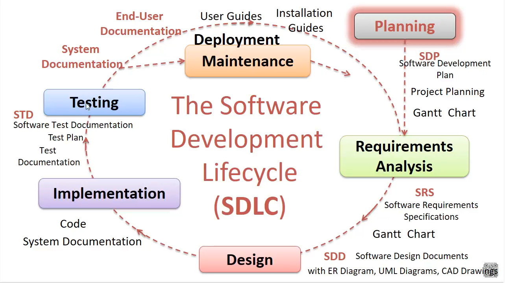
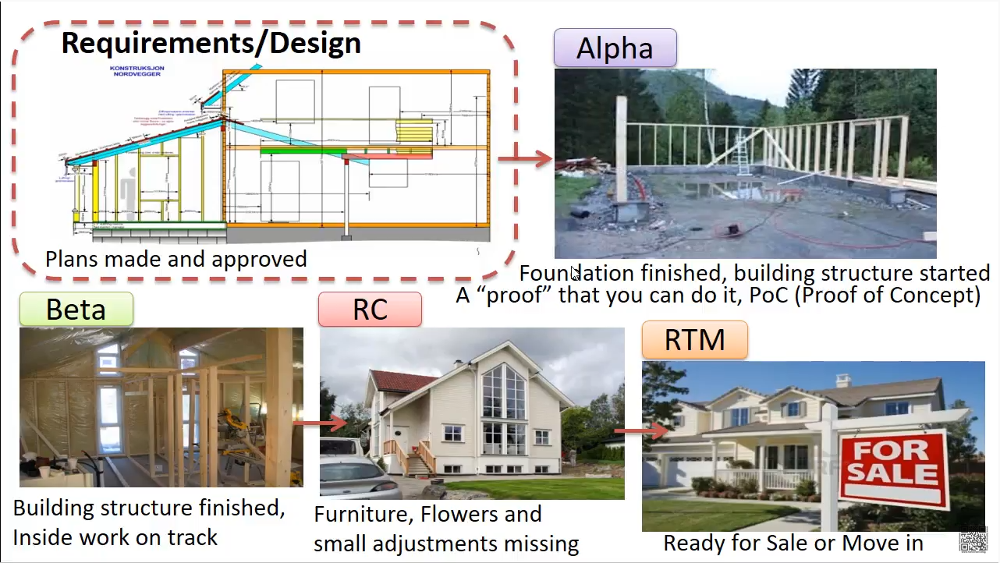

Requirements analysis and planning are the keys to the success of an implementation.
The difficulty is not particularly in installing the software nor in configuring it, but rather more about:
knowing what to configure,
deciding if you should adapt the software, or perhaps change your method of working, for some of your specialized processes,
forming teams that can specify and work on some of the changes,
ensuring that your users are committed to the change.
Defining requirements creates the foundation of a successful business intelligence (BI) solution by documenting what will be built. The categories of requirements are: business, data and data quality, functional, regulatory and compliance, and technical.
Per BABOK guide, official definition of requirement is:
“A condition or capability needed by a stakeholder to solve a problem or achieve an objective.” In simpler words, a decision-making process to derive requirements from needs.
“A condition or capability that must be met or possessed by a solution or solution component to satisfy a contract, standard, specification or other formally imposed documents.”It is a step where business requirements are drafted as solutions requirements to get started with developing the solution.
“A documented representation of a condition or capability as in 1 or 2.” The documentation is itself a requirement as it helps all the stakeholders and consumers in understanding the requirements for the solution.
Product architecture is the organization (or chunking) of a product's functional elements. It's the ways these elements, or chunks, interact.
Basic steps:
Create a schematic of the product
Cluster the elements of the schematic
Draft a geometric layout
Identify fundamental and incidental interactions
Product development is the complete process of delivering a new product or improving an existing one for customers.
What are some common early-stage product development frameworks?
The testing phase of product development ensures that the product operates as expected. This phase begins after the implementation of the product requirements.
Purposes
Product testing might have a variety of purposes, such as:
Determine if, or verify that, the requirements of a specification, regulation, or contract are me
Decide if a new product development program is on track: Demonstrate
Provide standard data for other scientific, engineering, and quality assurance functions
Validate suitability for end-use
Provide a basis for technical communication
Provide a technical means of comparison of several options
Provide evidence in legal proceedings: product liability, patents, product claims, etc.
Help solve problems with current product
Help identify potential cost savings in products
The deployment phase is the final phase of the software development life cycle (SDLC) and puts the product into production.brˇ
Deployment
When the system meets your approval and is ready to “go live”, we deploy it to your production environment and assist with your organization’s transition to the new system.
The development platforms we use support a broad range of deployment options.
There is no need to install any software on end-users machines – all software is installed on the server.
Maintenance
Systems evolve after deployment. We will continue to make improvements and changes to your systems as needed.
With Servoy, delivering the latest revisions to your users is a snap, and is completely transparent to your users
We can also train your development teams in how to maintain the system.
Product Description
Team Description
Software Procwss Model Description
Project Definition
Project Organization
Validation Plan
Configuration / Version Control
Tools
Platfoms
Tools and Languages
Softawe Architecture
Frameworks
GUI design sketches
UML Diagrams
ER Diagrams
CAD Drawing
etc.
Design of the product cannot happen if....are not complete (not right)
the product will not work according to customer....
Requirenments gathering and analysis, design, implementation and coding
Requirenments/ analysis and design documents
Product is not built, it does not exist and therefore cannot be coded
Right answer: 4/5
Instructions each tester uses to test the software +
A plan that includes the types of testing you will be using, resources for testing, how the software will be tested and test scripts +
The investigation and discovery phase +
Tests whether thew software or system works for the end user +
QA, SIT, UAT +

What is a Gantt Chart?
A Gantt chart, commonly used in project management, is one of the most popular and useful ways of showing activities (tasks or events) displayed against time. On the left of the chart is a list of the activities and along the top is a suitable time scale. Each activity is represented by a bar; the position and length of the bar reflects the start date, duration and end date of the activity. This allows you to see at a glance:
What the various activities are
When each activity begins and ends
How long each activity is scheduled to last
Where activities overlap with other activities, and by how much
The start and end date of the whole project

QA people - Quality Assurance people
SDP - Software Development Plan
WHAT - High-Level Requirements and Design documents
ER Diagram - Entity Relationship Diagram
UML Diagrams - Unified Modeling Language
CAD Drawing - Computer Aided Design
STP - Test Plans
STD - Test Documentation
SD - System Documentation
IG - Installation Guides
UM - User Manuals
Planning:
Definition of goals and objectives of the project;
Development of the site structure;
Development of design layouts;
Html layout;
Programming and quality control;
Launch and maintenance, SEO-optimization.
Requirements:
Registration, autorization, autontification
Opportunity to sign in and create posts
Comments to posts
Storage of all
Design:
Modern design
Unusual animations on website forum
Combine max 3 colors
Coding:
Coding site structure (what will be responsible for what)
Create and connect database to website
Coding login and logout
Сoding the extra forum structure system
Testing:
Test every stage of the forum, if something is wrong or a bit broken, then return to this stage, find mistake and fix it
Maintance:
Put the product on sale
Support the product for 4 years
Make some updates for the product during maintance